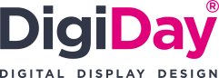

Rozcestník
nástrojů
Interní nástroje DigiDay Czech s.r.o.
Uživatel (NEX)
Heslo
Nesprávné jméno nebo heslo.
Přihlásit se
nebo
Přihlásit se přes NEX
Nástroje QARO
Importer a generátor widgetů pro systém QARO
→
Generátory PDF
Předávací protokoly a protokol o profylaxi
→
SAAS
SaaS nástroje, které využíváme
→
← Zpět na rozcestník
SaaS
nástroje
DigiScraper
Monitoring úředních desek českých samospráv
→
Výpis všech SaaS nástrojů
Přehled SaaS služeb, které využíváme
→
← Zpět na rozcestník
Nástroje
QARO
QARO importer
Import obsahu ze starých CMS do systému QARO
→
Generátor widgetů
Odkazové dlaždice a widgety pro weby QARO
→
Úřední deska
Widget úřední desky z RSS kanálu (Imunis, e-Deska.cz)
→
← Zpět na rozcestník
Generátory
PDF
Předávací protokol QARO
Předání webového systému samosprávám a obcím
→
Předávací protokol B2B
Předání projektu firemnímu zákazníkovi (IČO, DIČ, smlouva o dílo)
→
Protokol o profylaxi webu
Pravidelná údržba a kontrola webu
→
Harmonogram projektu
Harmonogram prací k projektům pro klienty
→